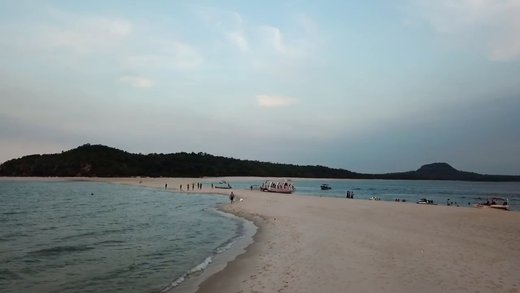

00:00:02.567
Plano baixo do banco de areia da Ponta do Cururu, com pequenas ondas, visitantes e embarcações junto à margem.
Ponta do Cururu, Alter do Chão, Santarém (PA) · confirmado
A transmissão começa com a vista da praia e o apresentador situa a visita no feriado de novembro de 2018. Mais adiante, ele identifica a Ponta do Cururu.
Transcrição · 00:00:00 | 00:00:08 | 00:00:35 | 00:01:31
Turismo Aqui — quadro de vídeo publicado no YouTube
Referência 1